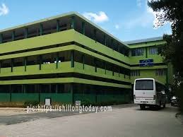
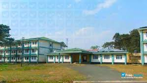
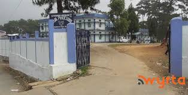
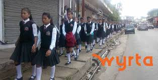
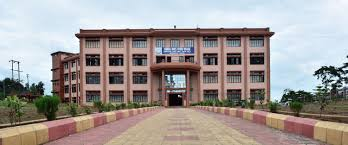
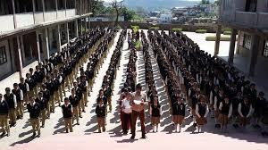
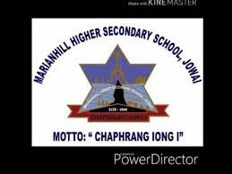
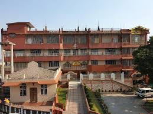
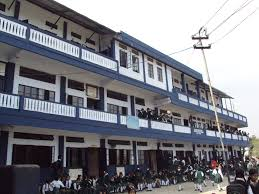

Educational Institutions in Jowai
Kiang Nangbah College
"Established in 1967, Kiang Nangbah Government College Jowai is a premier institution of Higher Education in the West Jaintia Hills District of Meghalaya and one of the Government Colleges, which was established in the state.Located in a vast and well-maintained campus conducive for academic activities, the college offers Arts, Science and Commerce courses at the Degree level. The college campus contains a football field, a basketball court, a badminton court, a volleyball court and a full-fledged auditorium to give ample facilities to its students for extra-curricular activities. The college has 14 departments with staff strength of about 120 (Teaching staff and support staff). The college at present caters to over 5500 students, including the Morning Section, which offers Higher Secondary and Degree courses in Arts Stream. Starting from very humble origins, Kiang Nangbah Government College has grown into a multi-faculty institution and has striven, since its inception, to turn the youth of Meghalaya, particularly Jaintia Hills, into leaders of their own society: politicians, bureaucrats, businessmen, doctors, lawyers, teachers, engineers etc."
Jowai Polytechnic
"Jowai Polytechnic was established in the year 2001 by the Government of Meghalaya with assistance from the World Bank under the Third Technician Education III Project. The Polytechnic provides facilities for study in Diploma courses in Engineering after H.S.L.C. (10+). The main objectives of the Polytechnic courses of studies is to produce technician at supervisory level to meet the demand of Technician manpower in various fields of development."
Jowai Public School
"Jowai Public School (JPS) located at . Jowai West Jaintia Hills is one of the popular schools in India. The School has been rated by 6 people on iCBSE. The School has been recognized by Council for Indian School Certificate Examinations since a long time. The Jowai Public School has been viewed 51 times by the visitors on iCBSE. This School is counted among the top-rated Schools in Meghalaya with an excellent academic track record. If you're looking for more details regarding application forms, admission procedure, examinations schedule, results and syllabus, kindly contact the relevant department of the school."
Jaintia Hr Sec School
"JAINTIA SECONDARY SCHOOL, JOWAI was established in 1986 and it is managed by the Pvt. Aided. It is located in Urban area. It is located in THADLASKEIN block of WEST JAINTIA HILLS district of Meghalaya. The school consists of Grades from 9 to 10. The school is Co-educational and it doesn't have an attached pre-primary section. The school is Private in nature and is not using school building as a shift-school. English is the medium of instructions in this school. This school is approachable by all weather road. In this school academic session starts in April. The school has Private building. It has got 0 classrooms for instructional purposes. All the classrooms are in good condition. It has 2 other rooms for non-teaching activities. The school has a separate room for Head master/Teacher. The school has Pucca boundary wall. The school has have electric connection. The source of Drinking Water in the school is Tap Water and it is functional. The school has 2 boys toilet and it is functional. and 2 girls toilet and it is functional. The school has a playground. The school has a library and has 4700 books in its library. The school does not need ramp for disabled children to access classrooms.The school has no computers for teaching and learning purposes The school is not having a computer aided learning lab. The school is Not Provided providing mid-day meal."
Thomas Jones Synod College
"Thomas Jones Synod College is located in Jowai, the District Headquarter of the West Jaintia Hills District, Meghalaya. The College was established with a vision of providing college education to young men and woman who wish to have their education under Christian auspices by the erstwhile Khasi Jaintia Presbyterian Synod vide its Resolution No. 34 (E) CED of the Synod meeting held during 13th - 17th of March, 1996 at the Balang Mawten, Rangthong Presbytery. This College was particularly named after Rev. Thomas Jones, also known as the father of the Khasi Alphabet, who was the first missionary from the Presbyterian Church of Wales to set foot in the Khasi Hills at Sohra on the 22nd of June 1841. Naming the college after him is a humble token of commemoration for his significant and monumental contribution to the Khasi community, especially as the pioneer in the field of education. The Mission of this College is to provide its student with education of a high standard of scholarship and learning and to inspire and prepare them for selfless and dedicated service in any part of India as responsible citizens of the country. The motto of the college shall be "Tip Briew, Tip Blei" which literally means "Know Man and Know God" . This motto calls upon one and all to be conscientious, humane, socially committed and spiritually inspired persons. It is expected that this motto shall be a guiding principle to all student who graduate from this institution Named after Rev. Thomas Jones, the father of the Khasi Alphabet, Thomas Jones Synod College was established in 1996 to provide education under Christian auspices. The college aims to inspire students for selfless service to society and follows the motto 'Tip Briew, Tip Blei' (Know Man, Know God)."
KJP Synod Higher Secondary School
"KJP SYNOD (M) HIGHER SECONDARY SCHOOL, JOWAI was established in 1994 and it is managed by the Pvt. Aided. It is located in Urban area. It is located in THADLASKEIN block of WEST JAINTIA HILLS district of Meghalaya. The school consists of Grades from 11 to 12. The school is Co-educational and it doesn't have an attached pre-primary section. The school is N/A in nature and is not using school building as a shift-school. English is the medium of instructions in this school. This school is approachable by all weather road. In this school academic session starts in April. The school has Private building. It has got 0 classrooms for instructional purposes. All the classrooms are in good condition. It has 2 other rooms for non-teaching activities. The school has a separate room for Head master/Teacher. The school has Pucca boundary wall. The school has have electric connection. The source of Drinking Water in the school is Tap Water and it is functional. The school has 1 boys toilet and it is functional. and 1 girls toilet and it is functional. The school has no playground. The school has no library and has 0 books in its library. The school does not need ramp for disabled children to access classrooms.The school has no computers for teaching and learning purposes The school is not having a computer aided learning lab. The school is Not Applicable providing mid-day meal."
Marian Hill Higher Secondary School
"Marian Hill Higher Secondary School, Jowai (MHHSS) located at Jaintia Hills Thadlaskein Ladthalaboh Ladthalaboh is one of the popular schools in India. The School has been rated by 14 people on iCBSE. The Marian Hill Higher Secondary School, Jowai has been viewed 66 times by the visitors on iCBSE. This School is counted among the top-rated Schools in Meghalaya with an excellent academic track record. If you're looking for more details regarding examinations schedule, application forms, admission procedure, results and syllabus, kindly contact the relevant department of the school."
North Liberty Higher Secondary School

"North Liberty Higher Secondary School's vision is to provide affordable, Christ-centered
education
with a focus on academic excellence. Their core values emphasize the authority of Scripture,
community service, and the development of responsible citizens guided by Christian
principles.
Our Vision
To bring glory to God and hope to the world by preparing promising students for excellence through an affordable,
community-oriented, Christ-centered education.
Moto
"Train up a child in the way he should go, and when he is old he will not depart from it." PROVERBS 22:6
Core Values
The lordship of Christ and the authority of Scripture
The centrality of service to the local community, and the world
The necessity of faith, the efficacy of prayer, and the value of work
The importance of affordability and the worth of a nurturing community
The imperative of a Christian lifestyle and the virtue of academic discipline
The priority of communicating throughout the world the message of peace & love."
H. K. Singh Memorial School

"H. K. SINGH MEMORIAL SCHOOL JOWAI was established in 1986 and it is managed by the Pvt. Aided. It is located in Urban
area. It is located in THADLASKEIN block of WEST JAINTIA HILLS district of Meghalaya. The school consists of Grades from
6 to 10. The school is Co-educational and it doesn't have an attached pre-primary section. The school is N/A in nature
and is not using school building as a shift-school. English is the medium of instructions in this school. This school is
approachable by all weather road. In this school academic session starts in April.
The school has Private building. It has got 5 classrooms for instructional purposes. All the classrooms are in good
condition. It has 2 other rooms for non-teaching activities. The school has a separate room for Head master/Teacher. The
school has Pucca boundary wall. The school has have electric connection. The source of Drinking Water in the school is
Well and it is functional. The school has 1 boys toilet and it is functional. and 1 girls toilet and it is functional.
The school has a playground. The school has a library and has 3100 books in its library. The school does not need ramp
for disabled children to access classrooms. The school has 11 computers for teaching and learning purposes and all are
functional. The school is having a computer aided learning lab. The school is Provided and Prepared in School Premises
providing mid-day meal. "